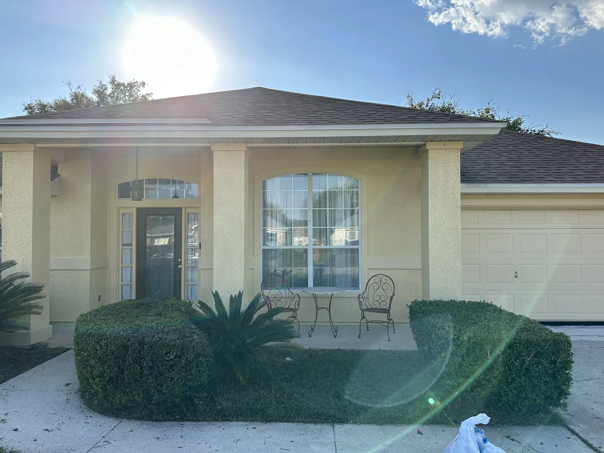

Confirm the address
Share the property ZIP code and neighborhood when you call so travel and scheduling can be confirmed before an estimate is arranged.
Duval County service area
JW provides painting, flooring and concrete-coating services across Duval County. Because conditions change from the Beaches to inland Jacksonville and Baldwin, every estimate starts with the exact address, the surface and the result you want.
Plan for the property
Duval County covers dense city neighborhoods, beach communities, commercial corridors and more spread-out addresses toward Baldwin. That range affects access, exposure and scheduling. An exterior near the coast may need a different condition check than a protected inland wall. An occupied interior may need staged work so rooms remain usable. JW scopes the actual surface instead of treating every Jacksonville address as the same job.
Before the estimate
Share the property ZIP code and neighborhood when you call so travel and scheduling can be confirmed before an estimate is arranged.
Note whether the work involves drywall, siding, concrete, tile, plank flooring or another existing finish, plus any visible damage.
Mention standing water, staining, peeling, salt exposure or recurring dampness. Those conditions may change the preparation or the appropriate finish.
If a room needs both paint and flooring, include both in the first conversation so trim, protection and touchups can be planned in order.
Connected finish work
Painting, flooring, repairs and coating work often touch the same room or exterior. The useful question is not only which finish goes on top, but what must be cleaned, repaired, leveled, masked or protected first. Tell JW if the project includes more than one trade so demolition, preparation, paint, flooring and final touchups can be considered together rather than priced as unrelated visits.

Questions before an estimate
These answers are planning guidance, not a diagnosis of a surface that has not been inspected.
Duval County is part of JW’s published Northeast Florida service area. Call (904) 233-2110 with the exact address and project scope to confirm scheduling for a specific property.
Those Beaches communities are included in the Duval County coverage described on this site. Coastal exposure can affect preparation, so describe the surface condition when requesting an estimate.
Yes. JW publicly offers both service categories. Include every part of the project in the first call so the crew can evaluate whether the work should be scoped and sequenced together.
Have the property ZIP code, service type, approximate rooms or square footage, current surface and visible concerns ready. Photos can help explain the condition, but an on-site look may still be needed.
Start the conversation
Share the ZIP code, surface, visible condition and work you need. JW can confirm whether the location and scope fit the current route.